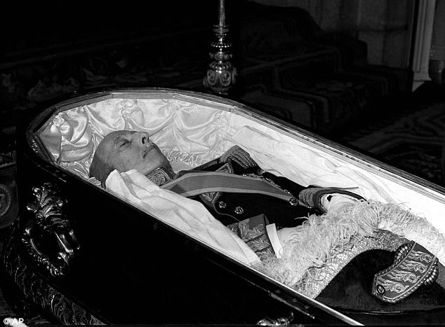
November 20th: Dictator Francisco Franco, aged 82, dies in Madrid.
November 22nd: Juan Carlos I is proclaimed the new King of Spain.
July 6th: Arias Navarro, the last Francoist Prime Minister, is replaced by Adolfo Suárez by the King.
November 18th: Law for Political Reform is approved by the government.
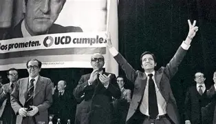
April 9th: The Communist Party is legalized after 38 years of clandestinity. Unions are also allowed again a few days later, ending the repression of political opinion.
June 15th: General elections are held for the first time since the 1930s. Suárez wins with 165 seats in the Congress of Deputies.
October 15th: Amnesty is approved for political prisoners and exiles.
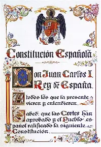
December 6th: The Spanish Constitution is put to a referendum and approved with 88% of the vote. Spain's National Day of the Constitution is established on this date.
March 1st: New general elections are held, with UCD (Suárez's party) winning once again.
October 25th: Catalonia and the Basque Country recover their autonomous governments and hold their first elections.
Many other Autonomous Communities (roughly equivalent to Canadian provinces) obtain self-government, leading to the present-day map of 17 autonomous communities.
January 29th: Suárez announces his intention to resign following poor results in municipal elections. Leopoldo Calvo-Sotelo is proposed as his successor, and the investiture vote is scheduled for February 23rd.
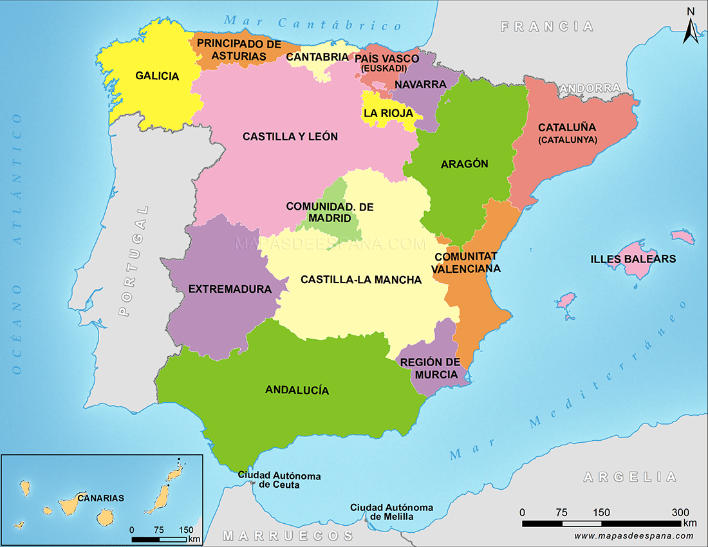
February 23rd: During the parliamentary vote to elect Calvo-Sotelo, Lieutenant Colonel Antonio Tejero storms Congress and fires shots into the ceiling, taking the chamber hostage. At the same time, military units mobilize in several cities, particularly Valencia. The coup attempt ultimately fails after King Juan Carlos I publicly defends the constitutional order in a televised address. The hostages are released the following morning after Tejero surrenders.
February 25th: Calvo-Sotelo is finally sworn in as Prime Minister.
June 6th: Spain joins NATO.
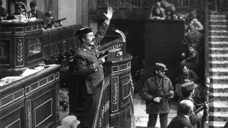
October 28th: Calvo-Sotelo loses the general election, and Felipe González of the PSOE becomes Prime Minister. This is generally considered the end of the Spanish Transition to Democracy.
January 1st: Spain joins the European Union.
June 22nd: Felipe González wins the general election and remains in power.
October 29th: Felipe González wins the general election again and begins his third term as Prime Minister.
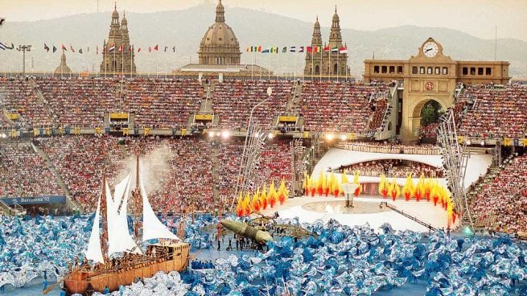
Summer: Barcelona hosts the Olympic Games for the first time.
Spring-Fall: Seville hosts the Universal Exposition (Expo '92).
April 14th: The first Spanish high-speed railway line (AVE) is inaugurated between Madrid and Seville.
June 6th: González begins his fourth term after winning the general election once again.
March 3rd: After 14 years in office, Felipe González loses the election and José María Aznar becomes the new Prime Minister.
March 12th: Aznar wins another general election and remains in power.
December 31st: Mandatory military service in Spain comes to an end.
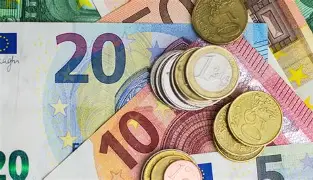
January 1st: Spain adopts the Euro, replacing the Peseta as its national currency.
July 11th: An armed conflict erupts between Spain and Morocco over disputed territories.
March 20th: Spain supports the United States-led invasion of Iraq.
March 14th: PSOE wins the general election and José Luis Rodríguez Zapatero becomes Prime Minister. Spain later withdraws its troops from Iraq.
June 30th: Same-sex marriage becomes legal in Spain, making it the third country in the world to do so.
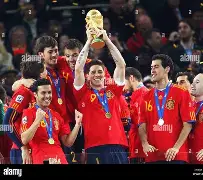
March 9th: Zapatero wins re-election and remains in office for another four-year term.
2008: The economic crisis begins to have a major impact on Spain.
July 11th: Spain wins the FIFA World Cup for the first time.
May 15th: Large protests, known as the 15-M Movement, take place in more than 40 Spanish cities in response to the economic crisis.
November 20th: PP wins the general election and Mariano Rajoy becomes the new Prime Minister.
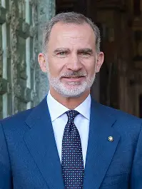
June 19th: King Juan Carlos I abdicates in favour of his son, Felipe VI.
December 20th: A general election produces no parliamentary majority, leading to months of negotiations.
March 20th: No candidate secures enough support to form a government, forcing a new election.
June 26th: Spain holds its second general election in less than a year. Rajoy wins and remains Prime Minister.
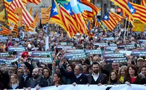
October 1st: Catalonia organizes an independence referendum despite it being ruled unconstitutional. Around three million people participate, with approximately 80% voting in favour of independence.
October 10th: Catalan President Carles Puigdemont makes a unilateral declaration of independence.
October 21st: Prime Minister Mariano Rajoy invokes Article 155 of the Constitution, dismissing the Catalan Government and assuming direct control of the region until new elections are held. Several ministers are arrested while Puigdemont leaves for Belgium.
June 1st: Following corruption scandals affecting the government, Pedro Sánchez wins a vote of no confidence against Mariano Rajoy and becomes Prime Minister.
April 28th: Sánchez wins the general election but fails to secure a parliamentary majority, leading to a second election.
June 10th: General Francisco Franco is exhumed from his mausoleum in the Valley of the Fallen.
November 10th: A second election is held. Sánchez forms Spain's first coalition government in modern democracy with Unidas Podemos.
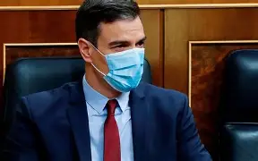
March 14th: A State of Alarm is declared in response to the COVID-19 pandemic.
June 22nd: The Spanish Government grants pardons to the Catalan leaders imprisoned following the 2017 independence process.
July 23rd: A general election results in Pedro Sánchez and Sumar maintaining their alliance and remaining in government.
October 29th: Valencia experiences one of the deadliest natural disasters in recent Spanish history, with severe flooding causing more than 200 deaths.
April 28th: Spain and Portugal suffer a major electrical blackout.
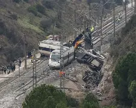
January 18th: A train crash in Adamuz (Andalusia) causes 42 deaths.
July 19th: Spain wins the FIFA World Cup for the second time.
October 28th: Another train crash in Toledo causes 62 deaths.